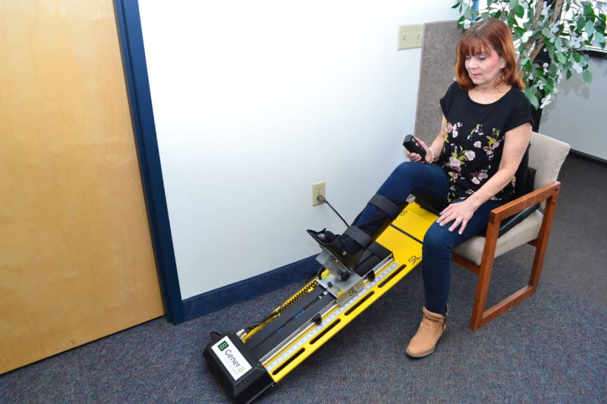
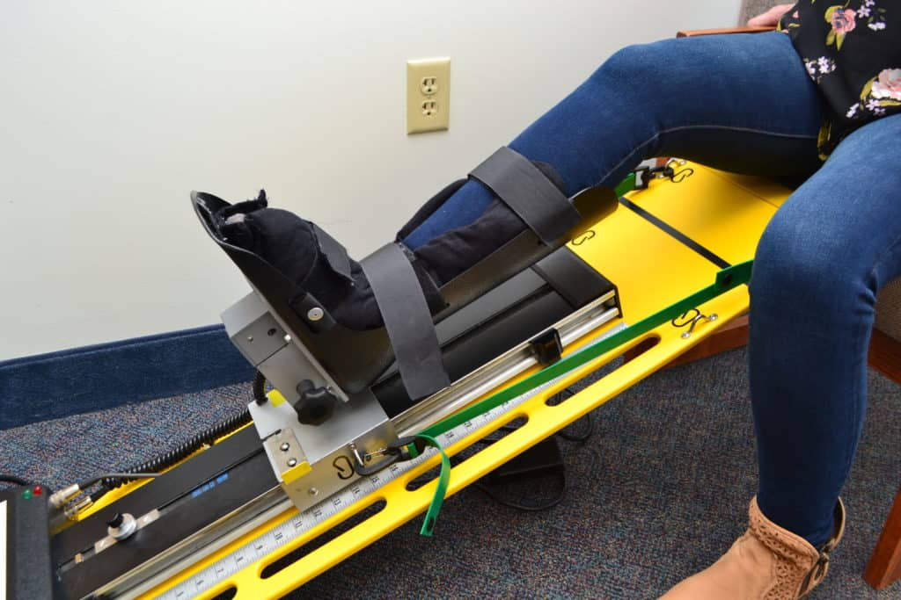
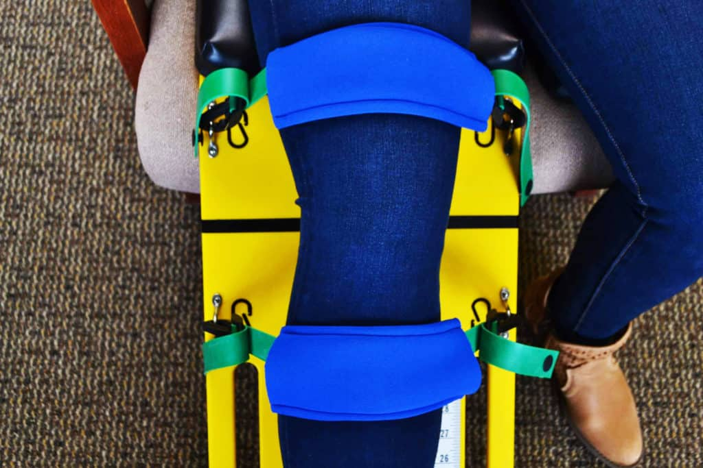
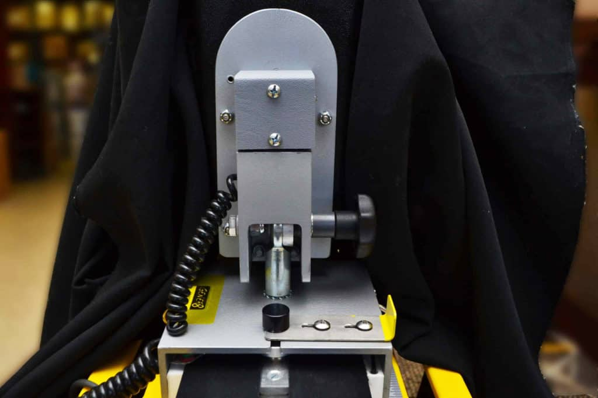
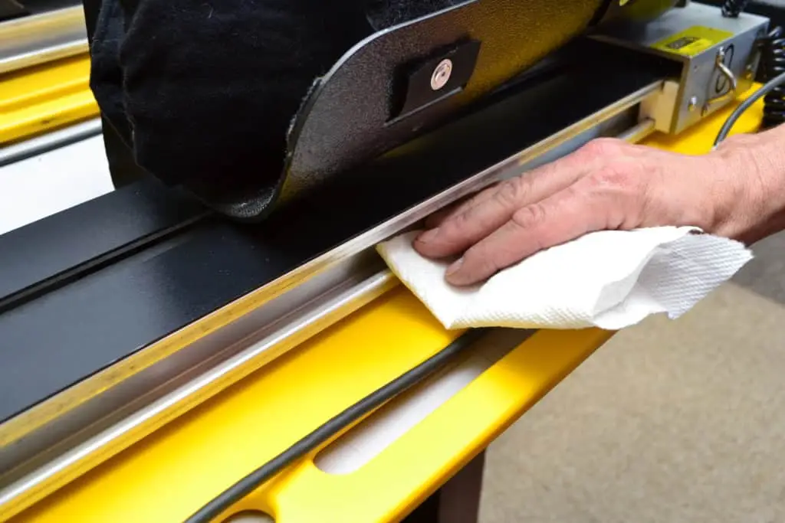
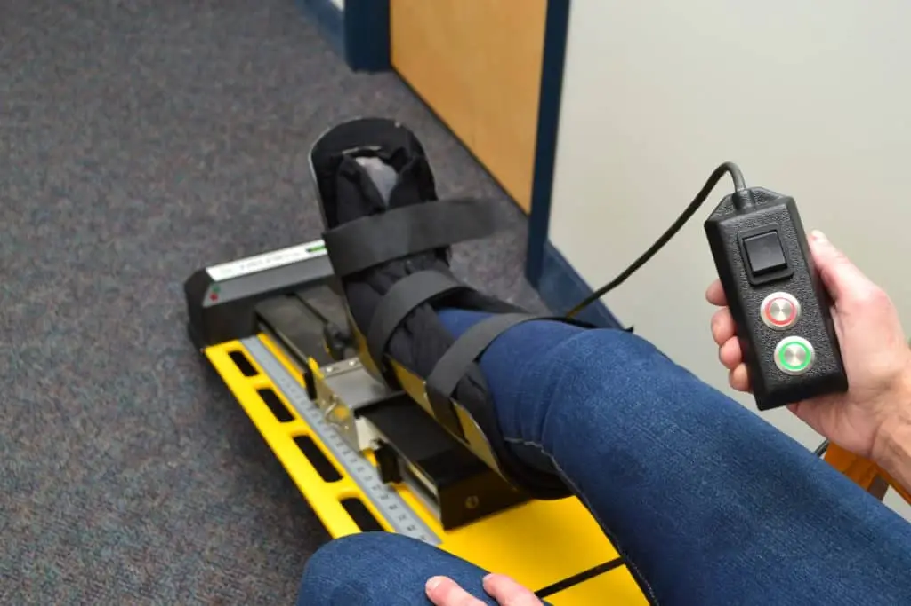
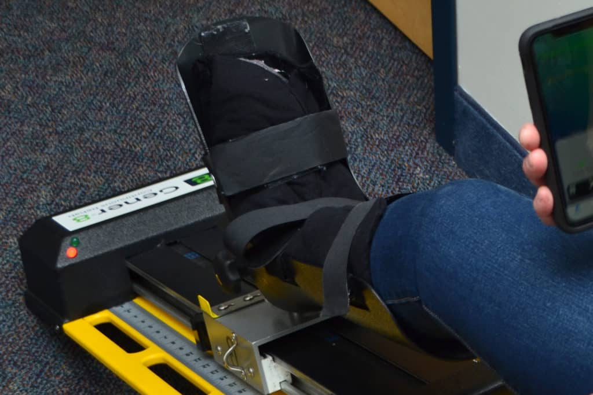
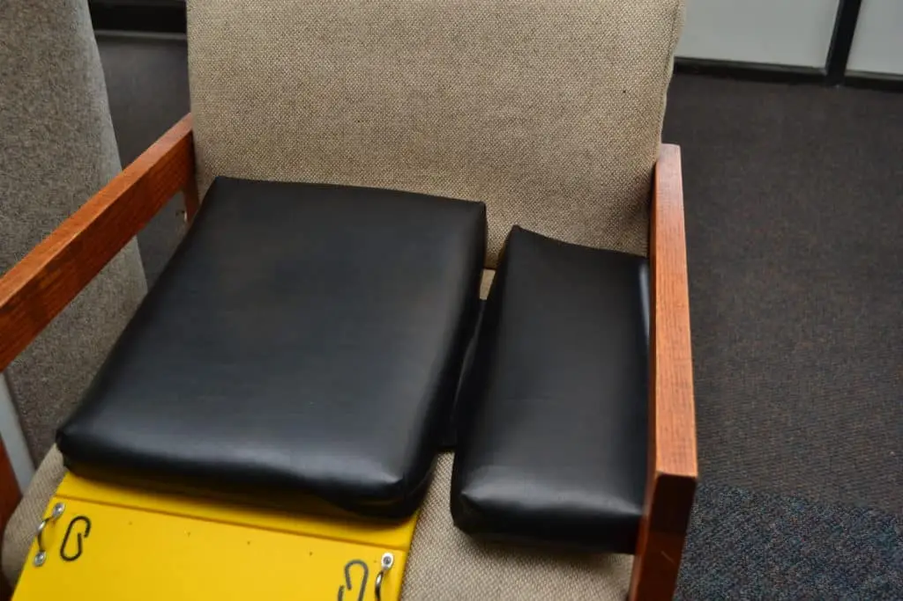

The Gener-8® takes Total Knee, ACL and other knee surgeries through the entire rehab process with both physician and patient satisfaction — eight functions in one connected device.
Functions, Features & Benefits
Easily adjustable with intuitive ROM stops.
By unlocking the pin and attaching the rigid adjustable ROM/Flexibility Straps, the Gener-8® allows controlled active assistive range of motion as the patient applies as little or as much force into flexion, passively returning to extension. It also allows simultaneous upper-body exercise and variable-angle co-contraction isometrics.
The Gener-8® allows guided active range of motion to as little or as much motion as tolerated.
Multilevel resistive ROM from very light to heavy resistance, stimulating co-contraction of quadriceps, hamstring and gluteal activation while minimizing tibial translation.
The engineered, patented graded multi-axial hinge joint allows minimal to maximal “free play” as the joint moves in PROM, AAROM, AROM or Resistive modes. Light sensors provide feedback so the patient reacts to stabilize the joint.
Electromagnetic sensors pick up ROM stops and alert the patient when they reach their goal. Proprioceptive sensors guide the patient to train motion control and joint-position awareness.
Unlike any other CPM, the Gener-8® is designed for active use in a seated position from almost any chair — getting the patient up sooner and more comfortable, while still usable from a bed or supine position.
Progressive passive knee extension at various force levels using adjustable band-tension technology.
Further Innovated Features
This combination takes surgeries through the entire rehab process with physician and patient satisfaction.
“Adam came out to my house within 24 hours and delivered my in-home rehab unit (Gener-8®) and educated me on the benefits and features of the program. The virtual specialist I worked with effectively managed the progression of my doctor’s rehab protocol. I safely rehabbed in the comfort of my own home.”Allen P. Patient of Michael Feign, DO — Colorado Springs
The open-knee design allows ice or compression-wrap application during use. AROM and resistive components drive active muscle contraction, pumping fluid from the joint earlier in rehabilitation.
Outcomes
For Rehab — with its 8 features, rehab can be advanced faster and optimizes physical-therapy visits for when best suited, at no increased cost. Telemedicine — the Gener-8® app monitors and progresses the patient from home in real time (ROM, compliance, pain, etc.) with a direct HIPAA-compliant video interface to the clinician. For the Provider — with patients doing more on their own at home and the move toward capitated rates, home-care costs, complications, re-admissions and second surgeries are greatly reduced.
Greater Compliance — most protocols are three hours, twice per day; the Gener-8® lets patients multi-task from a comfortable chair, and comfort alone improves compliance. Ease of Use — the most important CPM feature is ease of use, and to date no patient who used a prior CPM has preferred the traditional controller over the Gener-8®. Passive Knee Extension — protocols can now include passive knee extension, virtually eliminating the risk of stiff knee.
Improved outcomes, overall cost reduction, fewer re-admissions, and lower home-care and physical-therapy costs make it a perfect fit for today’s post-operative surgeries. Early activation and mobility also decrease vascular complications.
Gener-8® Video Overview
Close-Up Views
Click any photo to enlarge.








Specifications
| Brand | Gener-8® |
|---|---|
| Manufacturer | For You, Inc. |
| Application | Continuous Rehabilitation Machine (CRM) |
| Additional Contents | Dura-Band® Patient Kit |
| Dimensions | 45″ L × 12″ W |
| Extension | −10° |
| Flexion | 120° |
| Power Supply | 100–240 V, 50/60 Hz |
| Unit Weight | 28 lbs. |
| Weight Capacity | 350 lbs. |
Warranty
Whether renting or purchasing, all Gener-8® Continuous Rehabilitation Machines come with a manufacturer’s warranty. To obtain details, please contact Gener-8®.
Gener-8®
1773 Pine Hollow Road
McKees Rocks (Pittsburgh), PA 15136
Phone: (412)-566-3490